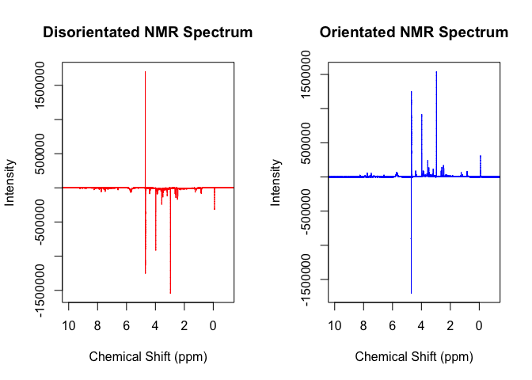

NMRalter8r was began during my honours projuct where I was trying to remove the effects of dilution in NMR urine spectra. Urine concentrations are highly variable based on a number of factors such as food and water intake, lifestyle and behaviour and this variation interferes with the multivariate statistics used to analyse NMR spectra. Therefore the goal of NMRalter8r is to calculate the signal to noise of the spectra and aim to make this constant across all samples acquired. This is achieved through automation of the NMR and on the fly calculations between an experiment with a small number of scans and an experiment with the altered number of scans.
Installation
To installthe development version of NMRalter8r, use the code below to access it from GitHub:
# install.packages("devtools")
devtools::install_github("kylebario/NMRalter8r")Standard Pipeline
This is the intended pipeline for any altered number of scans calculations:
library(NMRalter8r)
readin(path = system.file('extdata/15', package = 'NMRalter8r'))
plot(p,x, xlim = c(10, -1), type = 'l', col='red', main = "Preprocessed & Non-Preprocessed NMR Spectrum", xlab = 'Chemical Shift (ppm)', ylab = 'Intensity')
legend("topleft", legend = c("Non-Processed", "Processed"), col = c("red", "blue"), lty = 1)
pproc(x, p)
points(p,x, xlim = c(10, -1), type = 'l', col='blue')
Features
NMRalter8r is equipped with a range of preprocessing tools. A common problem with NMR spectra acquired with a small number of scans is that the processing done by Topspin will flip them the wrong way because the water peak is so much larger than the other peaks. NMRalter8r contains a function that checks and corrects for this:
library(NMRalter8r)
readin(path = system.file('extdata/4', package = 'NMRalter8r'))
par(mfrow = c(1,2))
plot(p, x, xlim = c(10, -1), type = 'l', col='red', main = "Disorientated NMR Spectrum", xlab = 'Chemical Shift (ppm)', ylab = 'Intensity')
xf <- flip_(x, p, sh = c(3,3.1))
plot(p, xf, xlim = c(10, -1), type = 'l', col='blue', main = "Orientated NMR Spectrum", xlab = 'Chemical Shift (ppm)', ylab = 'Intensity')